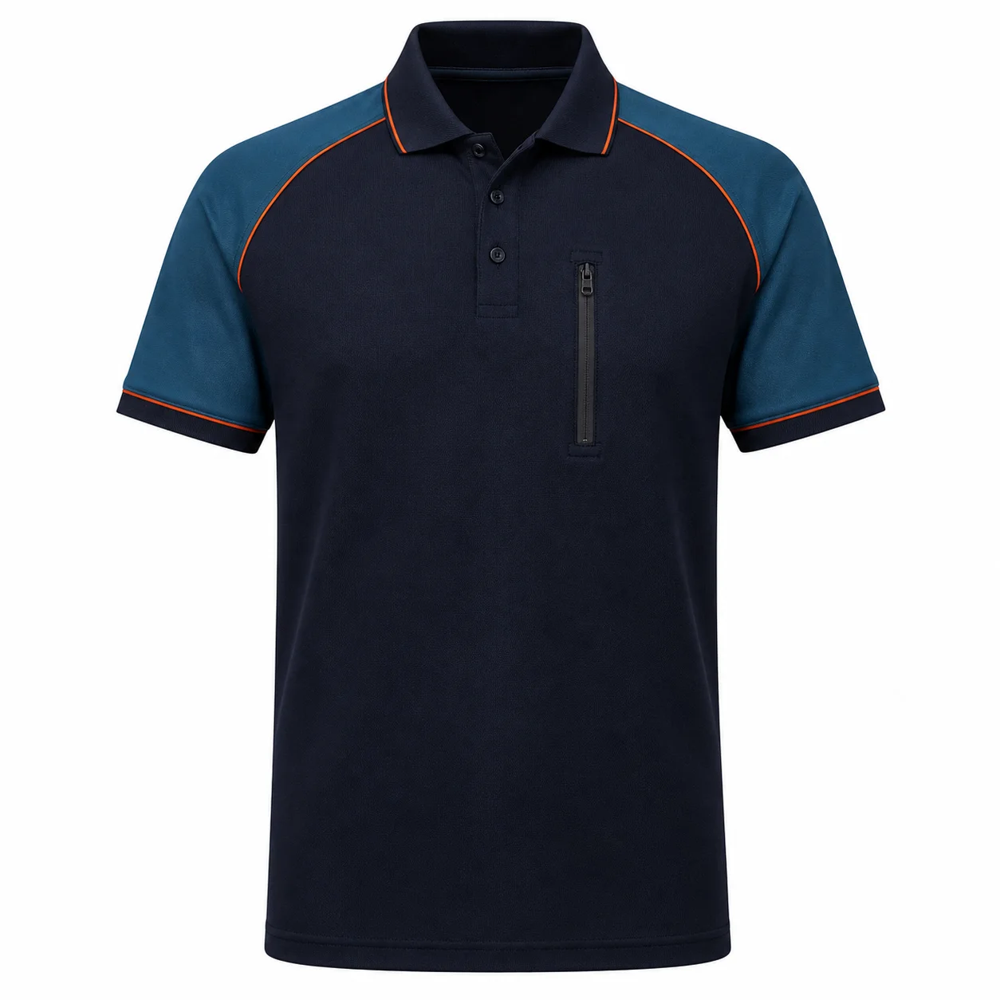

Lacivert Petrol Fermuar Cepli Polo İş Tişörtü
Lacivert gövdeyi petrol mavisi omuz panelleri, turuncu biyeler ve dikey fermuarlı göğüs cebiyle tamamlayan teknik polo iş tişörtüdür. Servis, bakım ve saha ekipleri için kurumsal renklerle üretilebilir.

Lacivert Petrol Fermuar Cepli Polo İş Tişörtü üretim ayrıntıları
Lacivert Petrol Fermuar Cepli Polo İş Tişörtü, kurumsal ekiplerde görev işlevi ve düzenli görünümü bir araya getirmek üzere planlanan İş tişörtleri modellerindendir. Lacivert | Petrol omuz paneli | Turuncu biye | Fermuarlı göğüs cebi | Polo yaka özellikleri modelin temel çerçevesini oluşturur.
Malzeme seçimi lakost veya penye örme kumaş üzerinden; çalışma ortamı, vardiya süresi, hareket ve bakım düzeni dikkate alınarak yapılır. Dikiş, cep ve kapama noktaları numunede kontrol edilir.
Logo ölçüsü ve konumu kumaş yüzeyiyle birlikte değerlendirilir. Onaylanan nakış veya baskı uygulaması model koduna bağlanarak tekrar sipariş standardı korunur.
Adet, beden dağılımı, renk, teslimat noktası ve hedef tarih yazılı paylaşıldığında kumaş ve üretim planı netleştirilir. Seri üretim yalnız onaylanan kapsam üzerinden ilerler.
Model özellikleri
- Lacivert
- Petrol omuz paneli
- Turuncu biye
- Fermuarlı göğüs cebi
- Polo yaka
Benzer ürünler
Beyaz Siyah Raglan Kollu Bisiklet Yaka Tişört
KT-TS-026 kodlu kurumsal üretim modelini inceleyin.
Ürün detayına gidin →Beyaz Siyah Raglan Kollu Polo Yaka Tişört
KT-TS-027 kodlu kurumsal üretim modelini inceleyin.
Ürün detayına gidin →Lacivert Geometrik Garnili İş Tişörtü
KT-TS-028 kodlu kurumsal üretim modelini inceleyin.
Ürün detayına gidin →Sık sorulan sorular
Minimum sipariş kaç adettir?
Bu modelde özel üretim minimum siparişi 50 adettir.
Logo uygulanabilir mi?
Kumaşa göre nakış, DTF, transfer veya serigrafi uygulanabilir.
Farklı renk üretilebilir mi?
Kumaş ve aksesuar uygunluğuna göre kurumsal renk planlanabilir.
Numune hazırlanabilir mi?
Proje kapsamına göre seri üretim öncesinde numune hazırlanabilir.
Beden dağılımı nasıl belirlenir?
Çalışan listesi ve numune kontrolüyle beden dağılımı yazılı onaya alınır.
Teklif için ne gerekir?
Adet, beden, renk, logo, teslimat şehri ve hedef tarih paylaşılmalıdır.
KT-TS-037 için teklif alın.
Ürün, adet, beden ve logo bilgilerinizi paylaşın.